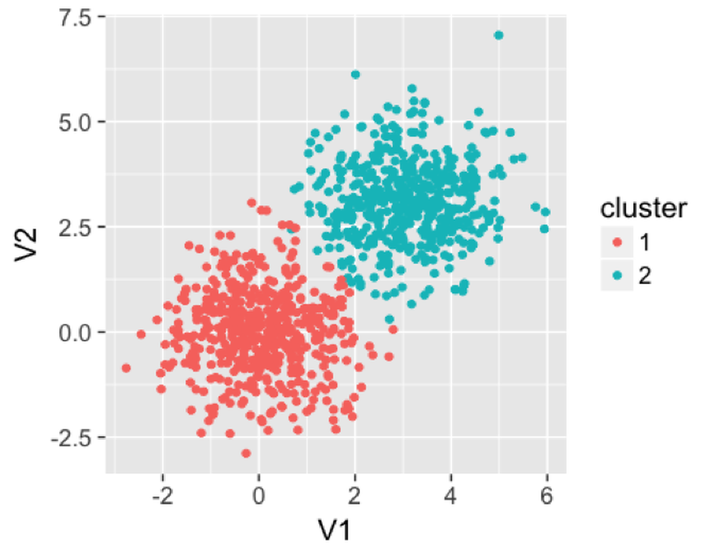

Remarks
Derivation of the EM algorithm
The aforementioned two-step iterative algorithm (i.e., as outlined in Figure 108) illustrates how the EM Algorithm works. We have assumed that the two-step iterative algorithm would converge. Luckily, it had been proved that the EM Algorithm generally would converge152 Wu, J., On the Convergence Properties of the EM Algorithm, The Annals of Statistics, Volume 11, Number 1, Pages 95-103, 1983..
The task of the EM algorithm is to learn the unknown parameters \(\boldsymbol{\Theta}\) from a given dataset. The \(\boldsymbol{\Theta}\) includes
[1.] The parameters of the \(M\) Gaussian distributions: \(\left\{\boldsymbol{\mu}_{m}, \boldsymbol{\Sigma}_{m}, m=1,2, \ldots, M\right\}\).
[2.] The probability vector \(\boldsymbol{\pi}\) that includes the elements \(\left\{\pi_{m}, m=1,2, \ldots, M\right\}\).
Don’t forget the binary indicator variable for each data point, denoted as \(z_{n m}\): \(z_{n m}=1\) indicates that the data point \(x_{n}\) was sampled from the \(m^{th}\) cluster153 The reason that \(z_{n m}\) is not included in \(\boldsymbol{\Theta}\), as it could be seen later, after the presentation of the EM algorithm, is that \(z_{n m}\) provides a bridge to facilitate the learning of \(\boldsymbol{\Theta}\). They are not essential parameters of the model, although they are useful to facilitate the estimation of the parameters of the model. Entities like \(z_{n m}\) are often called latent variables instead of parameters..
The Likelihood Function. To learn these parameters from data, like in the logistic regression model, we derive a likelihood function to connect the data and parameters. For GMM, we cannot write \(p\left(\boldsymbol{x}_{n} | \boldsymbol{\Theta}\right)\) directly. But it is possible to write \(p\left(\boldsymbol{x}_{n}, z_{n m} | \boldsymbol{\Theta}\right)\) directly154 That is what \(z_{n m}\) is needed for.
\[\begin{equation} p\left(\boldsymbol{x}_{n}, z_{n m} | \boldsymbol{\Theta}\right) = \prod_{m=1}^{M}\left[p\left(\boldsymbol{x}_{n} | z_{n m}=1, \boldsymbol{\Theta} \right) p\left(z_{n m}=1\right)\right]^{z_{n m}}. \tag{35} \end{equation}\]
We apply log on Eq. (35) and get the log-likelihood function in Eq (36)155 Note that, by definition, \(\pi_m = p\left(z_{n m}=1\right)\).
\[\begin{equation} \log p\left(\boldsymbol{x}_{n}, z_{n m} | \boldsymbol{\Theta}\right) = \sum_{m=1}^{M}\left[z_{n m} \log p\left(\boldsymbol{x}_{n} | z_{n m}=1, \boldsymbol{\Theta} \right)+z_{n m} \log \pi_{m}\right]. \tag{36} \end{equation}\]
It is known that156 I.e., by the definition of multivariate normal distribution; interested readers may see the Appendix of this book for a brief review. Here, the constant term \((2 \pi)^{-p / 2}\) in the density function of the multivariate normal distribution is ignored, so “\(\propto\)” is used instead of “\(=\).”
\[\begin{equation} p\left(\boldsymbol{x}_{n} | z_{n m}=1, \boldsymbol{\Theta} \right) \propto \left|\boldsymbol{\Sigma}_{m}\right|^{-1 / 2} \exp \left\{-\frac{1}{2}\left(\boldsymbol{x}_{n}-\boldsymbol{\mu}_{m}\right)^{T} \boldsymbol{\Sigma}_{m}^{-1}\left(\boldsymbol{x}_{n}-\boldsymbol{\mu}_{m}\right)\right\}. \tag{37} \end{equation}\]
Plug Eq. (37) into Eq. (36), we get
\[\begin{equation} \begin{gathered} \log p\left(\boldsymbol{x}_{n}, z_{n m} | \boldsymbol{\Theta}\right) \propto \\ \sum_{m=1}^{M}\left[z_{n m} \left( - \frac{1}{2}\log \left|\boldsymbol{\Sigma}_{m}\right| -\frac{1}{2}\left(\boldsymbol{x}_{n}-\boldsymbol{\mu}_{m}\right)^{T} \boldsymbol{\Sigma}_{m}^{-1}\left(\boldsymbol{x}_{n}-\boldsymbol{\mu}_{m}\right)+\right. z_{n m} \log \pi_{m} \right]. \end{gathered} \tag{38} \end{equation}\]
As there are \(N\) data points, the complete log-likelihood function is defined as
\[\begin{equation} l(\boldsymbol{\Theta}) = \log p(\boldsymbol{X}, \boldsymbol{Z} | \boldsymbol{\Theta}) = \log \prod_{n=1}^{N} p\left(\boldsymbol{x}_{n}, z_{n m} | \boldsymbol{\Theta}\right). \tag{39} \end{equation}\]
With Eq. (38), Eq. (39) can be rewritten as
\[\begin{equation} \begin{gathered} l(\boldsymbol{\Theta}) \propto \\ \sum_{n=1}^{N} \sum_{m=1}^{M}\left[z_{n m} \left( - \frac{1}{2}\log \left|\boldsymbol{\Sigma}_{m}\right| -\frac{1}{2}\left(\boldsymbol{x}_{n}-\boldsymbol{\mu}_{m}\right)^{T} \boldsymbol{\Sigma}_{m}^{-1}\left(\boldsymbol{x}_{n}-\boldsymbol{\mu}_{m}\right)+\right. z_{n m} \log \pi_{m} \right]. \end{gathered} \tag{40} \end{equation}\]
Now we have an explicit form of \(l(\boldsymbol{\Theta})\), based on which we use an optimization algorithm to search for the best estimate of \(\boldsymbol{\Theta}\).
Recall that \(z_{n m}\) is unknown. Here comes the initialization again. Following the idea we have implemented in the data example shown in Table 25, we propose the following strategy:
Initialization. Either initialize \(\left\{z_{nm}, n=1,2, \ldots, N; m=1,2, \ldots, M\right\}\) or \(\boldsymbol{\Theta}\).
E-step. We can estimate \(z_{n m}\) if we have known \(\boldsymbol{\Theta}\) (i.e., given \(\boldsymbol{\Theta}\)), the best estimate of \(z_{n m}\) is the expectation of \(z_{n m}\) where the expectation is taken regarding the distribution \(p\left(z_{n m} | \boldsymbol{x}_{n}, \boldsymbol{\Theta}\right)\) (i.e., denoted as \(\left\langle Z_{n m}\right\rangle_{p\left(z_{n m} | \boldsymbol{x}_{n}, \boldsymbol{\Theta}\right)}\)). By definition, we have
\[\begin{equation} \begin{gathered} \left\langle z_{n m}\right\rangle_{p\left(z_{n m} | \boldsymbol{x}_{n}, \boldsymbol{\Theta}\right)}=1\cdot p\left(z_{n m}=1 | \boldsymbol{x}_{n},{\boldsymbol{\Theta}}\right)+0 \cdot p\left(z_{n m}=0 | \boldsymbol{x}_{n}, {\boldsymbol{\Theta}}\right). \end{gathered} \tag{41} \end{equation}\]
It is known that
\[\begin{equation} p\left(z_{n m}=1 | \boldsymbol{x}_{n}, \boldsymbol{\Theta}\right)=\frac{p\left(\boldsymbol{x}_{n} | z_{n m}=1, \boldsymbol{\Theta}\right) \pi_{m}}{\sum_{k=1}^{M} p\left(\boldsymbol{x}_{n} | z_{n k}=1, \boldsymbol{\Theta}\right) \pi_{k}}. \tag{42} \end{equation}\]
Thus,
\[\begin{equation} \begin{gathered} \left\langle z_{n m}\right\rangle_{p\left(z_{n m} | \boldsymbol{x}_{n}, \boldsymbol{\Theta}\right)}= \frac{p\left(\boldsymbol{x}_{n} | z_{n m}=1, \boldsymbol{\Theta}\right) \pi_{m}}{\sum_{k=1}^{M} p\left(\boldsymbol{x}_{n} | z_{n k}=1, \boldsymbol{\Theta}\right) \pi_{k}}. \end{gathered} \tag{43} \end{equation}\]
- M-step. Then, we derive the expectation of \(l(\boldsymbol{\Theta})\) regarding the distribution \(p\left(z_{n m} | \boldsymbol{x}_{n}, \boldsymbol{\Theta}\right)\)
\[\begin{equation} \begin{gathered} \langle l(\boldsymbol{\Theta})\rangle_{p(\boldsymbol{Z} | \boldsymbol{X}, \boldsymbol{\Theta})}=\sum_{n=1}^{N} \sum_{m=1}^{M}\left[\left\langle z_{n m}\right\rangle_{p\left(z_{n m} =1 | \boldsymbol{x}_{n}, \boldsymbol{\Theta}\right)} \log p\left(\boldsymbol{x}_{n} | z_{n m}=1, \boldsymbol{\Theta}\right)+\right. \\ \left\langle z_{n m}\right\rangle_{p\left(z_{n m} =1 | \boldsymbol{x}_{n}, \boldsymbol{\Theta}\right)} \log \pi_{m} ]. \end{gathered} \tag{44} \end{equation}\]
And we optimize Eq. (44) for \(\boldsymbol{\Theta}\).
- Repeat the E-step and M-step. With the updated \(\boldsymbol{\Theta}\), we go back to the estimate of \(z_{n m}\) using Eq. (43), and then, feed the new estimate of \(z_{n m}\) into Eq. (44), and solve for \(\boldsymbol{\Theta}\) again. Repeat these iterations, until all the parameters in the iterations don’t change significantly157 Usually, we define a tolerance, e.g., the difference between two consecutive estimates of \(\boldsymbol{\Theta}\) is numerically bounded, such as \(10^{-4}\)..
More about the M-step. To estimate the parameters \(\boldsymbol{\Theta}\), in the M-step we use the First Derivative Test again and take derivatives of \(\langle l(\boldsymbol{\Theta})\rangle_{p(\boldsymbol{Z} | \boldsymbol{X}, \boldsymbol{\Theta})}\) (i.e., as shown in Eq. (44)) regarding \(\boldsymbol{\Theta}\) and put the derivatives equal to zero.
For \(\boldsymbol{\mu}_{m}\), we have
\[\begin{equation} \frac{\partial\langle l(\boldsymbol{\Theta})\rangle_{p(\boldsymbol{Z} | \boldsymbol{X}, \boldsymbol{\Theta})}}{\partial \boldsymbol{\mu}_{m}}=\sum_{n=1}^{N}\left\langle z_{n m}\right\rangle_{p\left(z_{n m} =1 | \boldsymbol{x}_{n}, \boldsymbol{\Theta}\right)} \frac{\partial \log p\left(\boldsymbol{x}_{n} | z_{n m}=1, \boldsymbol{\Theta}\right)}{\partial \boldsymbol{\mu}_{m}}=\boldsymbol{0}. \tag{45} \end{equation}\]
Based on Eq. (37), we can derive
\[\begin{equation} \frac{\partial \log p\left(\boldsymbol{x}_{n} | z_{n m}=1, \boldsymbol{\Theta}\right)}{\partial \boldsymbol{\mu}_{m}}= -\frac{1}{2} \frac{\partial\left(\boldsymbol{x}_{n}-\boldsymbol{\mu}_{m}\right)^{T} \boldsymbol{\Sigma}_{m}^{-1}\left(\boldsymbol{x}_{n}-\boldsymbol{\mu}_{m}\right)}{\partial \boldsymbol{\mu}_{m}}=\left(\boldsymbol{x}_{n}-\boldsymbol{\mu}_{m}\right)^{T} \boldsymbol{\Sigma}_{m}^{-1}. \tag{46} \end{equation}\]
Putting the result of Eq. (46) into Eq. (45), we can estimate \(\boldsymbol{\mu}_{m}\) by solving Eq. (45)
\[\begin{equation} \boldsymbol{\mu}_{m}=\frac{\sum_{n=1}^{N}\left\langle z_{n m}\right\rangle_{p\left(z_{n m} =1 | \boldsymbol{x}_{n}, \boldsymbol{\Theta}\right)} \boldsymbol{x}_{n}}{\sum_{n=1}^{N}\left\langle z_{n m}\right\rangle_{p\left(z_{n m} =1 | \boldsymbol{x}_{n}, \boldsymbol{\Theta}\right)}}. \tag{47} \end{equation}\]
Similarly, we take derivatives of \(\langle l({\boldsymbol{\Theta}})\rangle_{p(\boldsymbol{Z} | \boldsymbol{X}, \boldsymbol{\Theta})}\) regarding \(\boldsymbol{\Sigma}_{m}\) and put the derivatives equal to zero
\[\begin{equation} \frac{\partial\langle l(\boldsymbol{\Theta})\rangle_{p(\boldsymbol{Z} | \boldsymbol{X}, \boldsymbol{\Theta})}}{\partial \boldsymbol{\Sigma}_{m}}=\sum_{n=1}^{N}\left\langle z_{n m}\right\rangle_{p\left(z_{n m} =1 | \boldsymbol{x}_{n}, \boldsymbol{\Theta}\right)} \frac{\partial \log p\left(\boldsymbol{x}_{n} | z_{n m}=1, \boldsymbol{\Theta}\right)}{\partial \boldsymbol{\Sigma}_{m}}=\boldsymbol{O}. \tag{48} \end{equation}\]
Based on Eq. (37), we can derive
\[\begin{equation} \begin{gathered} \frac{\partial \log p\left(\boldsymbol{x}_{n} | z_{n m}=1, \boldsymbol{\Theta}\right)}{\partial \boldsymbol{\Sigma}_{m}} = \\ \frac{1}{2} \frac{\partial\left\{\left|\boldsymbol{\Sigma}_{m}\right|^{-1 / 2}-\left(\boldsymbol{x}_{n}-\boldsymbol{\mu}_{m}\right)^{T} \boldsymbol{\Sigma}_{m}^{-1}\left(\boldsymbol{x}_{n}-\boldsymbol{\mu}_{m}\right)\right\}}{\partial \boldsymbol{\Sigma}_{m}}=\frac{1}{2}\left[\boldsymbol{\Sigma}_{m}-\left(\boldsymbol{x}_{n}-\boldsymbol{\mu}_{m}\right)\left(\boldsymbol{x}_{n}-\boldsymbol{\mu}_{m}\right)^{T}\right]. \end{gathered} \tag{49} \end{equation}\]
Plug Eq. (49) into Eq. (48), we have
\[\begin{equation} \sum_{n=1}^{N}\left\langle z_{n m}\right\rangle_{p\left(z_{n m} =1 | \boldsymbol{X}, \boldsymbol{\Theta}\right)}\left[\boldsymbol{\Sigma}_{m}-\left(\boldsymbol{x}_{n}-\boldsymbol{\mu}_{m}\right)\left(\boldsymbol{x}_{n}-\boldsymbol{\mu}_{m}\right)^{T}\right]=\boldsymbol{O}. \tag{50} \end{equation}\]
Solving Eq. (50), we estimate \(\boldsymbol{\Sigma}_{m}\) as
\[\begin{equation} \boldsymbol{\Sigma}_{m}=\frac{\sum_{n=1}^{N}\left\langle z_{n m}\right\rangle_{p\left(z_{n m} =1| \boldsymbol{x}_{n}, \boldsymbol{\Theta}\right)} \left[\left(\boldsymbol{x}_{n}-\boldsymbol{\mu}_{m}\right)\left(\boldsymbol{x}_{n}-\boldsymbol{\mu}_{m}\right)^{T}\right]}{\sum_{n=1}^{N}\left\langle z_{n m}\right\rangle_{p\left(z_{n m} =1| \boldsymbol{x}_{n}, \boldsymbol{\Theta}\right)}}. \tag{51} \end{equation}\]
Lastly, to estimate \(\pi_{m}\), recall that \(\pi_m\) is the percentage of the data points in the whole mix that come from the \(m^{th}\) distribution, and \(\pi_m = p\left(z_{n m}=1\right)\), we can estimate \(\pi_{m}\) as
\[\begin{equation} \pi_{m}=\frac{\sum_{n=1}^{N}\left\langle z_{n m}\right\rangle_{p\left(z_{n m} =1 | \boldsymbol{x}_{n}, \boldsymbol{\Theta}\right)}}{N}. \tag{52} \end{equation}\]
Convergence of the EM Algorithm
Readers may have found that Eq. (40) gives us the form of \(\log p(\boldsymbol{X}, \boldsymbol{Z}| \boldsymbol{\Theta})\), that is what is denoted as \(l(\boldsymbol{\Theta})\). But, since \(\boldsymbol{Z}\) is the latent variable and not part of the parameters, the objective function of the GMM model should be
\[\begin{equation} \log p(\boldsymbol{X}| \boldsymbol{\Theta})=\log \int p(\boldsymbol{X}, \boldsymbol{Z} | \boldsymbol{\Theta}) d \boldsymbol{Z}. \tag{53} \end{equation}\]
But this is not what has been done in the EM algorithm. Instead, the EM algorithm solves for Eq. (44), that is essentially
\[\begin{equation} \langle \log p(\boldsymbol{X}, \boldsymbol{Z}| \boldsymbol{\Theta})\rangle_{p(\boldsymbol{Z} | \boldsymbol{X}, \boldsymbol{\Theta})} = \int \log p(\boldsymbol{X}, \boldsymbol{Z} ; \boldsymbol{\Theta}) p(\boldsymbol{Z} | \boldsymbol{X}, \boldsymbol{\Theta}) d \boldsymbol{Z}. \tag{54} \end{equation}\]
How does the solving of Eq. (54) help the solving of Eq. (53)?
The power of the EM algorithm draws on Jensen’s inequality . Let \(f\) be a convex function defined on an interval \(I\). If \(x_{1}, x_{2}, \ldots x_{n} \in I \text { and } \gamma_{1}, \gamma_{2}, \ldots \gamma_{n} \geq0\) with \(\sum_{i=1}^{n} \gamma_{i}=1\), then based on Jensen’s inequality, it is known that \(f\left(\sum_{i=1}^{n} \gamma_{i} x_{i}\right) \leq \sum_{i=1}^{n} \gamma_{i} f\left(x_{i}\right)\). Let’s apply this result to analyze the EM algorithm.
First, notice that
\[ \log p(\boldsymbol{X} | \boldsymbol \Theta)=\log \int p(\boldsymbol{X}, \boldsymbol{Z} | \boldsymbol \Theta) d \boldsymbol{Z} \]
\[ =\log \int Q(\boldsymbol{Z}) \frac{p(\boldsymbol{X}, \boldsymbol{Z} | \boldsymbol \Theta)}{Q(\boldsymbol{Z})} d \boldsymbol{Z}. \]
Here, \(Q(\boldsymbol{Z})\) is any distribution of \(\boldsymbol{Z}\). In the EM algorithm
\[Q(\boldsymbol{Z})=p(\boldsymbol{Z} | \boldsymbol{X}, \Theta).\]
Using Jensen’s inequality here, we have
\[ \log \int Q(\boldsymbol{Z}) \frac{p(\boldsymbol{X}, \boldsymbol{Z} | \boldsymbol \Theta)}{Q(\boldsymbol{Z})} d \boldsymbol{Z} \]
\[ \geq \int Q(\boldsymbol{Z}) \log \frac{p(\boldsymbol{X}, \boldsymbol{Z} | \boldsymbol \Theta)}{Q(\boldsymbol{Z})} d \boldsymbol{Z}. \]
Since
\[ \int Q(\boldsymbol{Z}) \log \frac{p(\boldsymbol{X}, \boldsymbol{Z} | \boldsymbol \Theta)}{Q(\boldsymbol{Z})} d \boldsymbol{Z}. \]
\[ =\int Q(\boldsymbol{Z}) \log p(\boldsymbol{X}, \boldsymbol{Z} | \boldsymbol \Theta) d \boldsymbol{Z}-\int Q(\boldsymbol{Z}) Q(\boldsymbol{Z}) d \boldsymbol{Z}, \]
and \(\int Q(\boldsymbol{Z}) Q(\boldsymbol{Z}) d \boldsymbol{Z}\) is quadratic and thus non-negative,
our final result is
\[\begin{equation} \log p(\boldsymbol{X} | \boldsymbol \Theta) \geq \int Q(\boldsymbol{Z}) \log p(\boldsymbol{X}, \boldsymbol{Z} | \boldsymbol \Theta) d \boldsymbol{Z}. \tag{55} \end{equation}\]
When we set \(Q(\boldsymbol{Z}) = p(\boldsymbol{Z} | \boldsymbol{X}, \boldsymbol{\Theta})\), Eq. (55) is rewritten as
\[\begin{equation} \log p(\boldsymbol{X} | \boldsymbol \Theta) \geq \langle \log p(\boldsymbol{X}, \boldsymbol{Z}| \boldsymbol{\Theta})\rangle_{p(\boldsymbol{Z} | \boldsymbol{X}, \boldsymbol{\Theta})}. \tag{56} \end{equation}\]
Eq. (56) reveals that \(\langle \log p(\boldsymbol{X}, \boldsymbol{Z}| \boldsymbol{\Theta})\rangle_{p(\boldsymbol{Z} | \boldsymbol{X}, \boldsymbol{\Theta})}\) is the lower bound of \(\log p(\boldsymbol{X} | \boldsymbol \Theta)\). Thus, maximization of \(\langle \log p(\boldsymbol{X}, \boldsymbol{Z}| \boldsymbol{\Theta})\rangle_{p(\boldsymbol{Z} | \boldsymbol{X}, \boldsymbol{\Theta})}\) can only increase the value of \(\log p(\boldsymbol{X} | \boldsymbol \Theta)\). This is why solving Eq. (54) helps the solving of Eq. (53). This is the foundation of the effectiveness of the EM algorithm. The EM algorithm is often used to solve for problems that involve latent variables. Note that, \(Q(\boldsymbol{Z})\) could be any distribution rather than \(p(\boldsymbol{Z} | \boldsymbol{X}, \boldsymbol{\Theta})\), and Eq. (55) still holds. In applications where we could not explicitly derive \(p(\boldsymbol{Z} | \boldsymbol{X}, \boldsymbol{\Theta})\), a surrogate distribution is used for \(Q(\boldsymbol{Z})\). This variant of the EM algorithm is called the variational inference158 A good starting point to know more about variational inference within a context of GMM, see: David, B., Kucukelbir, A. and McAuliffe, J., Variational Inference: A Review for Statisticians, Journal of the American Statistical Association, Volume 112, Number 518, Pages 859-877, 2017..
Clustering by random forest
Many clustering algorithms have been developed. The random forest model can be used for clustering as well. This is a byproduct utility of a random forest model. One advantage of using random forest for clustering is that it can cluster data points with mixed types of variables. To conduct clustering in random forests is to extract the distance information between data points that have been learned by the random forest model. There are multiple ways to do so. For example, one approach159 Shi, T. and Horvath, S., Unsupervised learning with random forest predictors. Journal of Computational and Graphical Statistics, Volume 15, Issue 1, Pages 118-138, 2006. that has been implemented in the R package randomForests is to generate a synthetic dataset with the same size as the original dataset, e.g., randomly generate the measurements of each variable using its empirical marginal distribution. The original dataset is taken as one class, while the synthetic dataset is taken as another class. Since the random forest model is used to classify the two classes, it will stress on the difference between the two datasets, which is, the variable dependency that is embedded in the original dataset but lost in the synthetic dataset because of the way the synthetic dataset is generated. Hence, each tree will be enriched with splitting variables that are dependent on other variables. After the random forest model is built, a distance between any pair of two data points can be calculated based on the frequency of this pair of data points existing in the same nodes of the random forest model. With this distance information, distance-based clustering algorithms such as the hierarchical clustering or K-means clustering160 E.g., both could be implemented using the R package cluster. algorithms can be applied to detect the clusters.
In the following example, we generate a dataset with two clusters. The clusters produced from the random forest model are shown in Figure 112.
 Figure 112: Clusters produced by the random forest model
We then use the following R code to apply a random forest model on this dataset to find the clusters. It can be seen that the clusters are reasonably recovered by the random forest model.
rm(list = ls(all = TRUE))
library(rpart)
library(dplyr)
library(ggplot2)
library(randomForest)
library(MASS)
library(cluster)
ndata <- 2000
sigma <- matrix(c(1, 0, 0, 1), 2, 2)
data1 <- mvrnorm(n = 500, rep(0, 2), sigma)
data2 <- mvrnorm(n = 500, rep(3, 2), sigma)
data <- rbind(data1, data2)
rf <- randomForest(data)
prox <- rf$proximity
clusters <- pam(prox, 2)
data <- as.data.frame(data)
data$cluster <- as.character(clusters$clustering)
ggplot(data, aes(x = V1, y = V2, color = cluster)) +
geom_point() + labs(title = 'Data points')Clustering-based prediction models
 Figure 113: Clustering-based prediction models
Figure 113: Clustering-based prediction models
As we have mentioned, clustering is a flexible concept. And it could be used in a combination of methods. Figure 113 illustrates the basic idea of clustering-based prediction models. It applies a clustering algorithm first on the data and then builds a model for each cluster. As a data analytics strategy, we could combine different clustering algorithms and prediction models that are appropriate for an application context. There are also integrated algorithms that have articulated this strategy on the formulation level. For example, the Treed Regression method161 Alexander, W. and Grimshaw, S., Treed regression. Journal of Computational and Graphical Statistics, Volume 5, Issue 2, Pages 156-175, 1996. is one example that proposed to build a tree to stratify the dataset first, and then, create regression models on the leaf nodes—here, each leaf node is a cluster. Similarly, the logistic model trees162 Landwehr, N., Hall, M. and Frank, E. Logistic model trees. Machine Learning, Volume 59, Issue 1, Pages 161–205, 2004. also use a tree model to cluster data points into different leaf nodes and build different logistic regression model for each leaf node. Motivated by this line of thought, more models have been developed with different combination of tree models and prediction models (or other types of statistical models) on the leaf nodes163 Gramacy, R. and Lee, H. Bayesian treed Gaussian process models with an application to computer modeling. Journal of American Statistical Association, Volume 103, Issue 483, Pages 1119-1130, 2008..164 Liu, H., Chen, X., Lafferty, J. and Wasserman, L. Graph-valued regression. In the Proceeding of Advances in Neural Information Processing Systems 23 (NIPS), 2010.